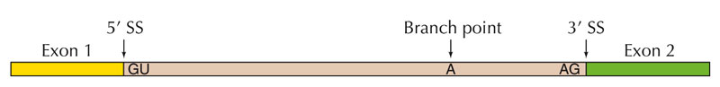

What is Splicing and why should we study it?
I know what splicing is, take me to current projects below

Spliceosome performing pre-mRNA splicing
The majority of genes in humans contain non-coding sequences, called introns, and coding sequences, the exons. Pre-mRNA splicing is the process by which precursor mRNA (pre-mRNA) is converted into mature RNA (mRNA) by the removal of its introns and the ligation of the coding exons by the spliceosome machinery. The spliceosome is a large complex of proteins that carries out splicing co-transcriptionally. The U2 spliceosome, the most abundant in humans, is composed of five small nuclear RNAs (snRNAs) called U1, U2, U4, U5, and U6, and many other helper proteins. snRNAs recognize motifs in DNA sequence that define the intron and therefore guide the spliceosome to correct cleaveage. The most important motifs are the 5' splice site (5'SS) which denotes the beginning of the intron by GT, the 3' splice site (3'SS) which denotes the end of the intron by an AG sequence, and the branch point (an A usually 30-40 nucleotides away of the 3'SS into the intron).

Splice site motifs
Even though the introns are defined by the splice sites, splicing is highly context dependent. There are many DNA motifs (cis-elements) and proteins (trans-elements) that play a role in how the spliceosome carries out splicing. Alternative splicing is when the spliceosome doesn't carry out splicing canonically where all introns are removed and all exons ligated. About 95% of human genes undergo alternative splicing. Alternative splicing serves the purpose to increase the number of mRNA products any one gene can produce, as it allows for skipping exons or adding introns into mRNA. That, in turn, may destroy the function of the protein the mRNA codes for or even give it a different function.

Alternative splicing may create functionally different proteins!
This brings us to the reason of why to study splicing. 1/3 of all disease causing genetic mutations are splicing related, so, one must study splicing in order to better understand the underlaying causes for this diseases. Furthermore, alternative splicing is a reversible process, which means that by studying how mutations affect the spliceosome, one might even find novel drug targets.
Using CRISPR to create model cell lines for splicing studies
The CRISPR-Cas9 system is an RNA guided DNA cleaving gene editing tool. The system has three components:
Cas 9: A double-stranded DNA cleaving endonuclease called sgRNA: a 23-nucleotide guideRNA, required to end in 'NGG attached to a cr/tracrRNA complex that aligns and helps the guideRNA and Cas9 to interact

CRISPR-Cas9: A gene editing tool that allows for knock-in and knock-out mutations.